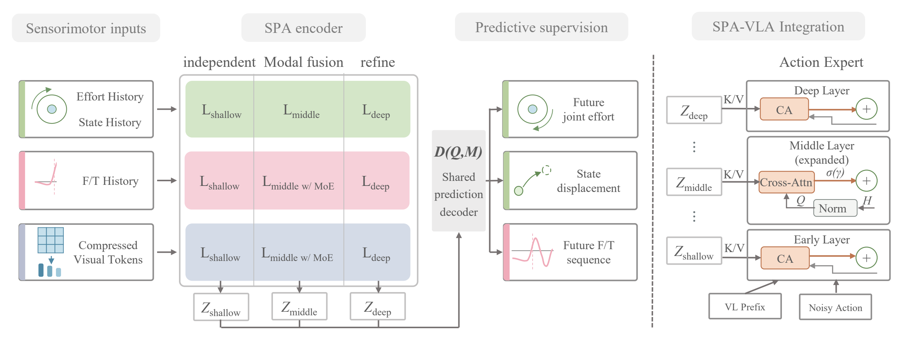
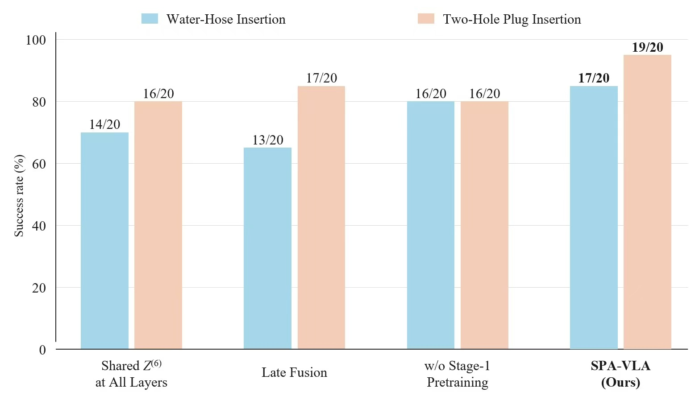
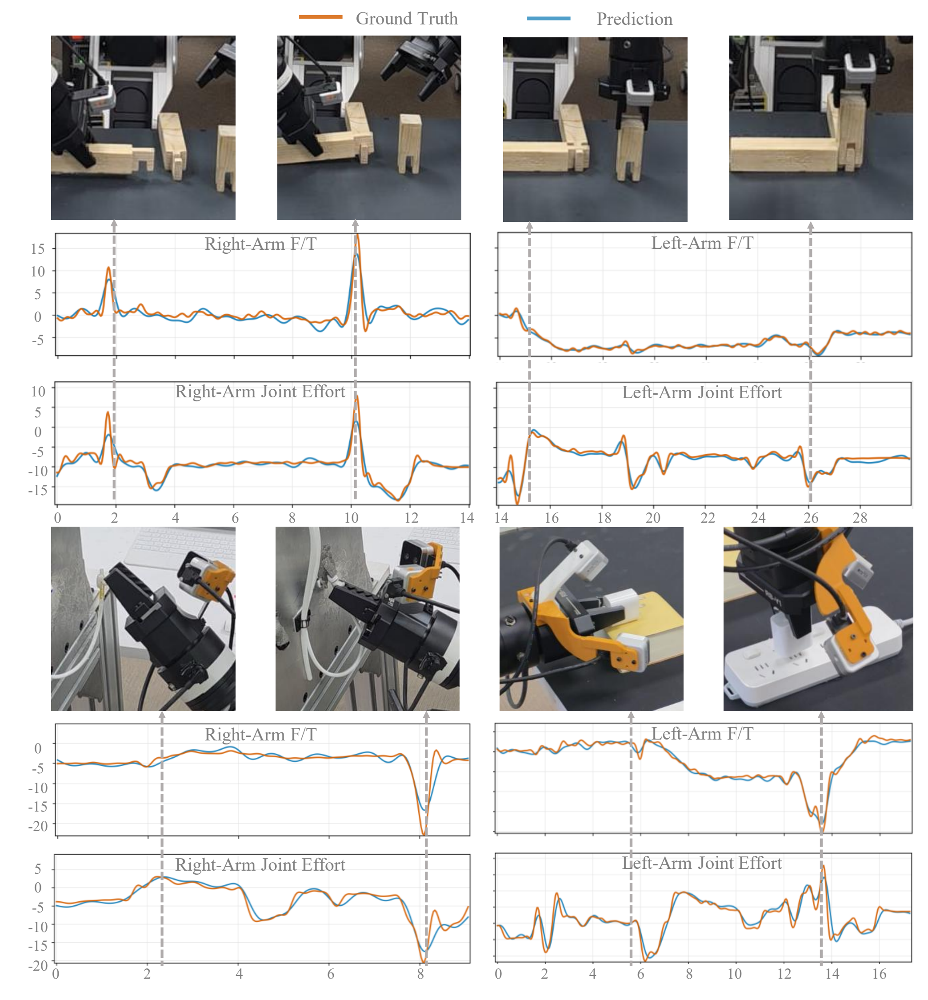

Task name pending
π0.5 MP4 slot
SPA-VLA MP4 slot
Research project · 2026
* Equal contribution
Institution One · Institution Two
SPA-VLA augments a π0.5-style policy with a six-layer multimodal Transformer trained to anticipate future force/torque, joint effort, and terminal joint-state displacement. Its hierarchical features are injected throughout the action expert to support precise interaction under contact.
Real-world task suite
The desktop layout reads by column: hard, medium, and easy. Each slot is reserved for a short, muted rollout from the corresponding SPA-VLA evaluation.
Coupled alignment and deformable insertion
Precise multi-contact alignment
Broader feasible contact regions
Evaluation protocol
Extended-data stability tests
These continuous tests were conducted after extending the task-specific datasets beyond the settings used in the six-task main comparison. They are reported separately and are not included in the success-rate averages above.
90source minutes
9web-video minutes
450consecutive trials
9test positions
60test minutes
80consecutive trials
1continuous session
500training demos
Method
SPA receives multiview visual tokens, force/torque history, robot state, and joint-effort history. Predictive pretraining turns these signals into shallow, middle, and deep physical representations that condition six levels of the action expert.

Quantitative evaluation
Success rates are measured over 20 consecutive trials per task. Tasks follow the hard-to-easy order in the experimental setup; Average is the unweighted mean across all six tasks.
Ablation studies
We ablate hierarchical sensorimotor fusion and Stage-1 predictive pretraining on Water-Hose Insertion and Two-Hole Plug Insertion. Each bar reports successes over 20 consecutive trials.

Selected paired cases
Two matched cases isolate how the policies respond after contact deviates from the nominal trajectory. These examples are qualitative comparisons, not an additional benchmark across all baselines.
Predictive representation
Predicted force/torque and joint-effort trajectories follow the measured interaction dynamics across insertion and assembly, providing the physical context used by the action expert.

Resources
Author, venue, paper, code, and model links will be updated when the public release information is confirmed.
@article{spa_vla_2026,
title = {SPA-VLA: Sensorimotor Predictive Augmentation
for Vision-Language-Action Models},
author = {Anonymous Authors},
journal = {Under Review},
year = {2026}
}